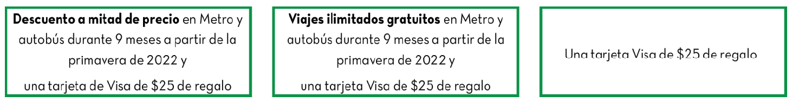

Programa de pruebas de tarifas para bajos ingresos (LIFT)
Preguntas frecuentes
8/10/2023

English አማርኛ 中文 Français 한국어 Tiếng Việt
Secciones
Descripción general
Encuesta
Tarjetas de Regalo de $25
Elegibilidad
Registrarse
Descuento en el transporte
Protección de datos
Contacto
Descripción general
¿Qué es el Programa de prueba de tarifas para bajos ingresos (LIFT)?
El programa de prueba de tarifas para bajos ingresos (LIFT) es un programa piloto que ofrece descuentos en Metro y autobús. A través de una lotería, los habitantes que reúnan los requisitos tendrán la oportunidad de obtener descuentos equivalentes a la mitad de precio o viajes ilimitados gratuitos durante nueve meses. Si es elegible y participa en la lotería , obtendrá una de las siguientes opciones:

¿Es LIFT el mismo programa que Metro Lift de WMATA?
○ No. El Programa de Prueba de Tarifas para Bajos Ingresos (LIFT) es un programa piloto que ofrece a los habitantes del DC descuentos en el transporte público desde enero de 2023 hasta octubre de 2023. Los habitantes del DC solicitaron participar en el programa piloto en 2022. El programa Metro Lift de WMATA es un programa en curso lanzado en junio de 2023, específicamente para hogares que reciben el SNAP.
¿Es LIFT el mismo programa que Metro For DC?
○ No. El proyecto de ley Metro For DC , aprobado en diciembre de 2022, incluía disposiciones como brindar servicios gratuitos de viajes en autobús con origen en el DC. La implementación del servicio de autobuses gratuitos está pendiente por temas de presupuesto.
[volver a la cima]
Encuesta
¿Puedo realizar la encuesta desde una computadora o un teléfono?
○ Sí, puede realizar la encuesta en una computadora o teléfono con acceso a Internet. La encuesta debe funcionar en todos los navegadores (por ejemplo, Google Chrome, Safari, Firefox o Microsoft Edge).
He recibido un mensaje de texto o un correo electrónico sobre la encuesta del LIFT. ¿Qué es esto?
○ Estamos encuestando a los participantes del LIFT para conocer su uso del transporte público, así como su bienestar emocional y económico. Sus respuestas a esta encuesta ayudarán al Gobierno del DC a saber cómo le afecta el costo del autobús y de Metro, y contribuirán a configurar el futuro del transporte público en el DC.
¿Puedo realizar la encuesta si no he recibido un descuento para autobús y Metro del LIFT?
○ Sí. Puede realizar la encuesta siempre que participe en el programa LIFT. Si solicitó el LIFT y se le notificó en 2023 que recibiría una tarjeta de regalo Visa de $25, un descuento de mitad de precio o viajes ilimitados gratuitos, puede participar en la encuesta.
No participo en el programa LIFT. ¿Puedo realizar la encuesta?
○ No. La encuesta solo está abierta a los participantes del programa LIFT.
¿Puedo hacer la encuesta más de una vez?
○ Si accidentalmente cierra la encuesta sin terminar, puede empezar de nuevo. Pedimos que cada participante seleccione "enviar" en su encuesta completa solo una vez. Solo se tendrá en cuenta una respuesta completa por participante y podrá ser elegible para la tarjeta de regalo.
¿Se puede pasar de un idioma a otro una vez que se está en medio de la encuesta?
○ Sí, pero la encuesta le llevará a la primera página, así que tendrá que seleccionar la flecha "Siguiente"/adelante para volver a la página donde estaba.
¿Qué obtendré por completar la encuesta?
○ Los participantes del LIFT elegibles y que completen la encuesta recibirán una tarjeta digital Visa de regalo de $30. Además, si facilita el número de su tarjeta SmarTrip (que no sea parte del LIFT) válida en la encuesta, participará en un sorteo de una tarjeta de regalo Visa digital adicional de $30.
¿Por qué se me pide una tarjeta SmarTrip que no sea del LIFT?
○ Utilizaremos la información de sus tarjetas SmarTrip para saber cómo utilizan Metro y el autobús los participantes en el programa. Ya disponemos de los números de las tarjetas SmarTrip para las tarjetas del LIFT, y queremos asegurarnos de tener una imagen completa del uso del transporte público por parte de los participantes en el programa como grupo. Cuando compartamos los resultados sobre el uso de tarjetas por parte de los participantes como grupo, no compartiremos ningún dato que le identifique.
¿Dónde puedo encontrar el número de mi tarjeta SmarTrip?
- Si tiene la tarjeta física:
- El número de su tarjeta SmarTrip se encuentra en el reverso de la tarjeta, en la parte inferior.<\li>
- El conjunto de números debe empezar por 0167. <\li>
<\li>
- Si su tarjeta SmarTrip está en su Apple Wallet:
- Acceda a la aplicación Apple Wallet de su teléfono.<\li>
- Seleccione la opción de la tarjeta SmarTrip.<\li>
- Seleccione “...” en la esquina superior derecha de la pantalla.<\li>
- Haga clic en “Card Number”. <\li>
- Su número de tarjeta debe empezar por 0176. Puede copiar y pegar ese número en la encuesta. Deben aparecer automáticamente espacios en blanco entre cada grupo de 4 números.
<\li>
- Si su tarjeta SmarTrip está en su Google Wallet:
- Acceda a la aplicación Google Wallet de su teléfono. <\li>
- Seleccione la opción de la tarjeta SmarTrip. <\li>
- Su número de tarjeta aparecerá en la parte superior de la pantalla y debe empezar por 0177. <\li>
- Si utiliza la aplicación SmarTrip: Abra la aplicación SmarTrip. Vaya a la sección “Cards” en la parte inferior de la pantalla. Seleccione la opción de la tarjeta SmarTrip. Su número de tarjeta aparecerá en la parte superior de la pantalla. <\li>
Para obtener ayuda adicional o más información, visite Encuentre su número de tarjeta SmarTrip.
¿Por qué se pregunta en la encuesta si mi grupo familiar recibe beneficios del SNAP?
○ Los programas de descuento para el transporte público y otros programas de descuento del país se ofrecen a veces exclusivamente a los participantes del Programa de Asistencia Nutricional Suplementaria (SNAP). Entender cómo los grupos familiares que reciben beneficios del SNAP utilizan el LIFT puede ayudarnos a hacer recomendaciones para atender mejor a esos hogares.
[volver a la cima]
Tarjetas Regalo de $25
Recibí un correo electrónico o un mensaje de texto sobre una tarjeta de regalo de $25 del LIFT. ¿Es real el mensaje?
○ Enviamos tarjetas de regalo a los participantes del LIFT por correo electrónico y mensaje de texto el 7/10/2023, 7/31/2023 y el 8/10/2023. Puede enviar un correo electrónico a lift@dc.gov o llamar al 202-304-1975 si necesita más confirmación.
No conozco las tarjetas de regalo digitales. ¿Cómo funcionan?
○ Las tarjetas de regalo digitales son versiones electrónicas de las tarjetas de regalo plásticas tradicionales. Puede consultar su saldo llamando al número gratuito o visitando el sitio web que figura en el reverso de su tarjeta de regalo. Perfect Gift tiene más información sobre cómo verificar el saldo de una tarjeta de regalo digital y cómo utilizarla.
¿Puedo añadir el dinero de mi tarjeta de regalo digital a mi tarjeta SmarTrip del LIFT?
○ Autoridad de Tránsito del Área Metropolitana de Washington (WMATA) no recomienda utilizar tarjetas de regalo para añadir valor a una tarjeta SmarTrip en línea, ya que WMATA no puede garantizar que funcionen.
¿Tengo que gastar mi tarjeta de regalo digital antes de una fecha determinada?
○ Sí. Las tarjetas digitales de regalo vencerán al cabo de un año.
¿Tengo que gastar mi tarjeta de regalo digital antes de una fecha determinada?
○ Sí. Las tarjetas digitales de regalo vencerán después de junio del 2025.
¿Qué pasa si pierdo o me roban mi tarjeta de regalo Visa de $25?
○Las tarjetas de regalo funcionan como dinero en efectivo; eso significa que si otra persona tiene el número de su tarjeta de regalo, puede utilizarla y no hay forma de recuperarla. Le recomendamos que mantenga en privado el número de su tarjeta de regalo. Si tiene algún problema con una tarjeta de regalo (por ejemplo, no funciona o tiene menos valor del esperado), póngase en contacto con Perfect Gift directamente. Puede informar de estos problemas a lift@dc.gov para registrar su consulta, pero solo nuestro proveedor puede resolver los problemas con las tarjetas de regalo; el LIFT no emitirá tarjetas de regalo de reemplazo (nuevas).
[volver a la cima]
Elegibilidad
¿Para quién es este programa?
Usted puede ser elegible si se cumplen todas las condiciones siguientes:
- Vive en el Distrito de Columbia.
- Tiene entre 18 y 64 años.
- Actualmente no es empleado de la Autoridad de Tránsito del Área Metropolitana de Washington (WMATA) o del Gobierno del DC.
- Su grupo familiar recibe ayuda del Departamento de Energía y Medio Ambiente (DOEE) para pagar sus servicios públicos o lo ha hecho en el último año. Esto significa que recibió asistencia de uno o más de los siguientes programas en cualquier momento desde octubre de 2020:
- No está recibiendo personalmente un descuento para personas mayores, estudiantes o personas con discapacidad en el transporte, incluido
-
El Programa de tarifa gratuita o reducida para personas mayores y personas con discapacidades
Kids Ride Free para viajes gratuitos de niños o
El subsidio de transporte para estudiantes adultos. .
- No hay problema si alguien más de su grupo familiar recibe alguno de estos descuentos.
¿Por qué el Gobierno del DC ofrece los descuentos por lotería?
○ Hay más personas elegibles que fondos disponibles en el piloto, y una lotería les da a todos una oportunidad justa de obtener un descuento. También podremos usar esta lotería para informar un estudio, llamado evaluación aleatoria, que nos ayudará a ver si LIFT realmente tiene un impacto sobre la forma en que los habitantes se desplazan y su empleo, ingresos, familia, salud y uso de energía. (Conozca cómo usaremos y protegeremos los datos de los participantes.) Los hallazgos pueden ayudarnos a hacer que el transporte sea más económico y alentar el uso del transporte en el Distrito de Columbia (DC).
Tengo más de 65 años. ¿Cómo obtengo un descuento para el transporte?
Si tiene más de 65 años, califica para recibir una tarjeta SmarTrip para adultos de la tercera edad. Con la tarjeta SmarTrip para adultos de la tercera edad, obtendría un descuento equivalente a la mitad del precio para viajes en Metro y autobús. Necesitará una identificación oficial con foto que muestre su fecha de nacimiento. Llévela a un punto de ventas de Metro o a cualquier biblioteca del condado de Montgomery para obtener su tarjeta SmarTrip para adultos de la tercera edad.
Tengo una discapacidad. ¿Cómo obtengo un descuento para el transporte?
No estoy seguro si soy empleado del gobierno del DC. ¿Soy elegible para el programa LIFT?
- Si es empleado del gobierno del DC, no es elegible para el programa LIFT. Los empleados del gobierno del DC son personas que desempeñan funciones del gobierno del Distrito y reciben una compensación por el desempeño de dichos servicios o son miembros de una junta o comisión del gobierno del Distrito, con o sin compensación.
- Esto no incluye a las personas que prestan servicios para el gobierno del Distrito como contratistas independientes.
¿Por qué necesito recibir asistencia de servicios públicos del DOEE para inscribirme en este programa?
- Queremos que sea lo más fácil posible registrarse. El DOEE ya verifica los ingresos de los hogares que reciben asistencia de servicios públicos, por lo que no tendrá que verificar sus ingresos nuevamente. De esta manera, disminuiremos el papeleo que necesitará para ingresar a la lotería.
- Debido a que LIFT es un programa piloto temporal, tiene cupos limitados. Los hallazgos de LIFT se pueden usar para dar forma a futuras políticas y programas que hagan que el transporte sea más asequible para los habitantes de bajos ingresos, no solo para los beneficiarios del DOEE.
¿Puede más de una persona en mi grupo familiar participar en la lotería?
Solo un integrante por grupo familiar puede inscribirse en LIFT.
No cumplo con los requisitos de elegibilidad, pero aún necesito ayuda para pagar el transporte. ¿Qué debo hacer?
Si no es elegible para LIFT, puede calificar para otros descuentos de transporte, como:
[volver a la cima]
Registrarse
¿Hay una fecha límite para registrarse?
El miércoles 30 de noviembre de 2022 era fecha límite para inscribirse y tener la oportunidad de obtener descuentos para el transporte. Dado que este es un programa piloto temporal, aún no sabemos si se ofrecerá nuevamente en el futuro.
He recibido un mensaje que dice que no soy elegible. ¿Qué debo hacer ahora?
○ Si no es elegible para LIFT, puede ser elegible para otros descuentos de transporte, como:
Cometí un error en el formulario de registro. ¿Cómo puedo solucionarlo?
- Si todavía está en el formulario de registro en línea, puede usar los botones “Atrás” en la parte inferior del formulario para volver a la pregunta en la que cometió un error (no use el botón “Atrás” en su navegador).
- Si ya ha enviado su formulario, puede completar uno nuevo. Utilizaremos la versión más reciente del formulario de inscripción que haya enviado.
¿Puedo guardar mi formulario continuarlo más tarde?
Sí. Presione el botón "Guardar y continuar más tarde" en la parte inferior del formulario y complete su dirección de correo electrónico. Recibirá un correo electrónico con un enlace para retomar su formulario donde lo dejó. Si sale del formulario de alguna otra manera (como usando el botón “Atrás” en su navegador o cerrando la pestaña en línea), deberá comenzar de nuevo. Tenga en cuenta que no participará en la lotería hasta que complete el formulario en su totalidad y presione “Enviar”. Guardar un formulario incompleto no le asegurará un lugar en la lotería.
He hecho clic en el botón “Atrás” en mi navegador y no puedo volver al formulario de registro.
Desafortunadamente, su información puede haberse perdido. Puede comenzar su formulario de registro nuevamente aquí.
Tengo dificultades técnicas con el formulario de registro.
Comuníquese a lift@dc.gov o al 202-304-1975 e informe su consulta y tantos detalles como sea posible, incluidas capturas de pantalla o imágenes de la pantalla.
¿Cómo sabré si mi formulario de registro fue recibido?
- Si se registró en línea, proporcionó una dirección de correo electrónico y presionó “Enviar” al final del formulario de registro, recibirá un correo electrónico de confirmación. Asegúrese de revisar su carpeta de correo no deseado o correo basura y agregue a lift@dc.gov a su lista de contactos.
- Dentro de los próximos dos meses, recibirá un correo electrónico o una carta para confirmar que es elegible y para informarle si obtendrá un descuento para el transporte en la lotería.
- Si no tiene noticias nuestras, envíenos un correo electrónico a lift@dc.gov o comuníquese con el DOEE al 202-304-1975.
Si envié mi formulario de registro, ¿definitivamente recibiré un descuento para el transporte?
- Estimamos que aproximadamente la mitad de las personas que son elegibles y entran en la lotería recibirán un descuento para el transporte. Pero todos los que se registren y sean elegibles recibirán una tarjeta Visa de regalo de $25 como agradecimiento por registrarse.
- Ya sea que lo seleccionen para un descuento o no, si es elegible para la lotería le enviaremos por correo su tarjeta Visa de $25 de regalo y es posible que le pidamos que complete encuestas opcionales (pagas).
Necesito actualizar mi información, pero ya he enviado mi formulario de registro.
Una vez que se envía su formulario de registro, no puede editarlo. Sin embargo, si su información ha cambiado, puede completar uno nuevo. Utilizaremos la versión más reciente del formulario de inscripción que haya enviado.
Presioné “Enviar”. ¿Cuáles son los próximos pasos?
- Recibirá un correo electrónico, un mensaje de texto o una carta para confirmar que es elegible y para informarle si obtendrá un descuento para el transporte en la lotería.
- Si queda seleccionado para recibir un descuento, le enviaremos por correo una tarjeta SmarTrip con su descuento dentro de los próximos dos meses, y su descuento durará nueve meses.
- Ya sea que lo seleccionen para un descuento o no, si es elegible para la lotería le enviaremos por correo su tarjeta Visa de $25 de regalo y es posible que le pidamos que complete encuestas opcionales (pagas).
¿Qué pasa si cambio de opinión sobre la participación en LIFT?
Puede cambiar de opinión sobre la participación en cualquier momento. Comuníquese con lift@dc.gov o contacte al DOEE al 202-304-1975. Si decide no participar más, su tarjeta SmarTrip de LIFT dejará de funcionar. Cualquier dato que ya haya proporcionado puede incluirse en nuestro análisis, pero no recopilaremos ningún dato adicional sobre su participación.
[volver a la cima]
Descuentos de transporte
Fui seleccionado para recibir una tarjeta Visa de regalo de $25 en la lotería, pero no un descuento en el transporte. ¿Qué significa eso?
- Esto significa que puede seguir pagando Metrobus, Metrorail, DC Circulator y otros servicios de autobuses regionales como lo haría normalmente. Los precios seguirán siendo los mismos.
- De todas maneras recibirá una tarjeta Visa de regalo de $25 por registrarse. Usaremos la información sobre cómo usa el transporte público y otros servicios para dar forma a programas futuros para hacer que el transporte público sea más económico. Es posible que le pidamos que complete encuestas opcionales (pagas).
Recibí un descuento a mitad de precio en la lotería. ¿Qué significa eso?
- Esto significa que obtendrá una reducción de la mitad del precio normal de cualquier viaje en Metrobus, Metrorail, DC Circulator y otros servicios de autobuses regionales durante nueve meses con esta tarjeta SmarTrip. Deberá agregar dinero a su tarjeta SmarTrip de LIFT antes de usarla. Puede hacerlo en línea, en una estación de Metrorail, en un Metrobus o en tiendas minoristas seleccionadas, como CVS y Giant.
- Le enviaremos un correo electrónico, un mensaje de texto o una carta con un número de confirmación e instrucciones para recoger su tarjeta. Usted o una persona de su confianza debe traer su número de confirmación para recoger su tarjeta SmarTrip de LIFT en la Autoridad de Tránsito del Área Metropolitana de Washington (WMATA) en 655 Virginia Ave SW, Washington, DC 20024 antes del . El horario de atención es: lunes de 8:00 a.m. a 4:00 p.m., martes de 8:00 a.m. a 2:30 p.m. y miércoles a viernes de 8:00 a.m. a 4:00 p.m. No podemos enviar su tarjeta SmarTrip de LIFT por correo en este momento.
- El descuento comenzará la primera vez que use su tarjeta y vencerá el 31 de octubre de 2023.
- También recibirá una tarjeta Visa de regalo de $25 por registrarse.
- Metro solo te cobrará la mitad del precio habitual cuando lo toques. También puede agregar pases ilimitados de 7 días a mitad de precio y pases de autobús regional de 7 días a su tarjeta. El descuento a mitad de precio se aplica incluso durante las horas pico.
- Usaremos la información sobre cómo usa el transporte público y otros servicios para dar forma a programas futuros para hacer que el transporte público sea más asequible. Es posible que le pidamos que complete encuestas opcionales (pagas).
Recibí viajes gratuitos ilimitados en la lotería. ¿Qué significa eso?
- Esto significa que puede viajar gratis en Metrobus, Metrorail, DC Circulator y otrosservicios de autobuses regionales durante nueve meses con esta tarjeta SmarTrip. Puede usar inmediatamente esta tarjeta SmarTrip para acceder a las estaciones de Metro y autobuses, no necesita cargarla con valor de transporte u otros pases. La tarifa gratuita se aplica incluso durante las horas pico.
- Le enviaremos un correo electrónico, un mensaje de texto o una carta con un número de confirmación e instrucciones para recoger su tarjeta. Usted o una persona de su confianza debe traer su número de confirmación para recoger su tarjeta SmarTrip de LIFT en la Autoridad de Tránsito del Área Metropolitana de Washington (WMATA) en 655 Virginia Ave SW, Washington, DC 20024 antes del . El horario de atención es: lunes de 8:00 a.m. a 4:00 p.m., martes de 8:00 a.m. a 2:30 p.m. y miércoles a viernes de 8:00 a.m. a 4:00 p.m. No podemos enviar su tarjeta SmarTrip de LIFT por correo en este momento.
- Las tarifas gratuitas comenzarán la primera vez que use su tarjeta y vencerán el 31 de octubre de 2023.
- También recibirá una tarjeta Visa de regalo de $25 por registrarse.
- Usaremos la información sobre cómo usa el transporte público y otros servicios para dar forma a programas futuros para hacer que el transporte público sea más asequible. Es posible que le pidamos que complete encuestas opcionales pagas.
¿Quién decide si recibo un descuento LIFT?
- Los descuentos en el transporte de LIFT se otorgan al azar a través de una lotería.
- No hay ningún proceso para apelar su selección de lotería.
¿Cuándo recibiré mi tarjeta SmarTrip de LIFT?
- Si es elegible y la lotería le selecciona para recibir un descuento, le enviaremos un correo electrónico, un mensaje de texto o una carta con un número de confirmación e instrucciones para recoger su tarjeta. Usted o una persona de su confianza debe traer su número de confirmación para recoger su tarjeta SmarTrip de LIFT en WMATA en 655 Virginia Ave SW, Washington, DC 20024 antes del . El horario de atención es: lunes de 8:00 a.m. a 4:00 p.m., martes de 8:00 a.m. a 2:30 p.m. y miércoles a viernes de 8:00 a.m. a 4:00 p.m. No podemos enviar su tarjeta SmarTrip de LIFT por correo en este momento.
- Su descuento vencerá el 31 de octubre de 2023. Sea seleccionado o no, le enviaremos por correo su tarjeta Visa de regalo de $25.
¿En qué opciones específicas de autobús y tren puedo usar este descuento de transporte?
Puede usar su tarjeta SmarTrip de LIFT como lo haría normalmente en todo el transporte del DC, incluidos Metrobus y Metrorail y DC Circulator. También puede usarlo en algunos sistemas de transporte en Maryland y Virginia, incluidos
- Arlington Transit (ART)
- El sistema de autobuses CUE (City of Fairfax-University Energysaver)
- Driving Alexandria Safely Home (DASH)
- Fairfax Connector
- The Bus en el condado de Prince George
- Autobuses RideOn en el condado de Montgomery
- Loudoun County Transit
- OmniRide de la Comisión de Transporte de Potomac y Rappahannock (PRTC).
¿LIFT ofrece descuentos en MetroAccess?
- No, LIFT no ofrece descuentos en MetroAccess. LIFT ofrece descuentos en Metrorail, Metrobus y empresas asociadas de autobuses regionales que aceptan tarjetas SmarTrip.
¿Puedo agregar valor a mi tarjeta SmarTrip de LIFT a través de la aplicación móvil SmarTrip o en línea?
- Sí, puede registrar su tarjeta, comprar pases y agregar valor a su tarjeta a través de la aplicación SmarTrip o en línea.
- Si recibió viajes ilimitados gratuitos en la lotería, no hay necesidad de agregar pases o valor. Todos tus viajes serán gratuitos. De todas maneras puede registrar su tarjeta en línea si lo desea.
¿Puedo transferir mi tarjeta SmarTrip de LIFT a mi teléfono (a través de Apple Wallet o Google Pay)?
No, su tarjeta SmarTrip de LIFT no se puede agregar a su teléfono a través de Apple Wallet o Google Pay. Esto significa que no puede acceder a Metro o al autobús usando su teléfono, debe usar su tarjeta.
¿Puedo vender mi tarjeta SmarTrip de LIFT?
No, no venda su tarjeta SmarTrip de LIFT. Esta tarjeta está destinada a ayudarle a trasladarse.
¿Puedo compartir mi tarjeta SmarTrip de LIFT?
Le recomendamos que use su tarjeta SmarTrip de LIFT para sus propios viajes en Metro y autobús, pero no hay penalización por compartirla.
¿Cuánto tiempo puedo usar mis viajes ilimitados gratuitos o el descuento a mitad de precio?
Su descuento vencerá el 31 de octubre de 2023. Después de esa fecha, su tarjeta SmarTrip de LIFT ya no funcionará. Puede reanudar el pago de Metro y el autobús como lo haría normalmente.
¿Se me permite participar en otros programas del Gobierno del DC durante LIFT?
- Su participación en LIFT no afecta los beneficios y servicios que normalmente recibiría del DOEE u otras agencias del Distrito, pero no es elegible para LIFT si recibe personalmente un descuento en Metro o autobús para personas mayores, con discapacidades o estudiantes. Esto incluye el Programa de tarifa gratuita o reducida para personas mayores y personas con discapacidades, Kids Ride Free para viajes gratuitos de niños y el subsidio de transporte para estudiantes adultos.
¿Qué pasa si pierdo o me roban mi tarjeta SmarTrip de LIFT?
Si su tarjeta SmarTrip de LIFT se pierde o se la roban, comuníquese con nosotros en lift@dc.gov o con el Departamento de Energía y Medioambiente (DOEE) al 202-304-1975. Desactivaremos la tarjeta perdida o robada y le enviaremos una nueva.
¿Qué pasa si mi tarjeta Visa de regalo de $25 se pierde o me la roban?
Desafortunadamente, no podemos reemplazar las tarjetas Visa de regalo de $25 si se pierden o las roban.
[volver a la cima]
Protección de datos
¿Cómo usará el Gobierno del DC mi información?
Además de ofrecer descuentos en el transporte a los habitantes, este programa también nos ayudará a nosotros, el Gobierno del DC, a descubrir cómo estos descuentos en el transporte afectan la forma en que los habitantes se desplazan, así como su empleo, ingresos, familia, salud y uso de energía. Usaremos su información para verificar su identidad y elegibilidad. También podemos utilizar su información para
- encviarle una tarjeta SmarTrip o tarjetas de regalo;
- omunicarnos para obtener información adicional;
- responder a sus preguntas;
- enviarle encuestas opcionales y pagas; y
- evaluar cómo este programa lo afecta a usted y a otros habitantes del Distrito.
¿Cómo se protegerán mis datos?
- Nosotros, el Gobierno del DC, trataremos sus datos como información confidencial y protegida, lo que significa que almacenaremos sus datos de forma segura y accederemos a ellos en computadoras encriptadas. Nunca enviaremos sus datos por correo electrónico, los publicaremos en línea ni los pondremos a disposición a través de canales que no estén encriptados.
- Solo utilizaremos sus datos para comprender cómo funciona el programa LIFT. No compartiremos sus datos con anunciantes ni con agentes del orden público, a menos que así lo exija la ley.
- Cualquier resultado de investigación que publiquemos no incluirá nombres ni información personal de usted o cualquier otro participante.
- Al finalizar el estudio, ya no accederemos ni utilizaremos su información personal. Cualquier dato que vendamos no incluirá nombres ni información personal de usted o cualquier otro participante. Siempre que sea posible, eliminaremos sus datos por completo.
¿Me contactarán en el futuro si participo en este programa?
Sí. Podemos comunicarnos con usted un par de veces a lo largo de los nueve meses de este programa para obtener más información sobre su uso del transporte público y su experiencia con el programa.
¿Por qué me piden que suministre mi número de Seguro Social o número A?
- Usaremos su número de Seguro Social o número A para comprobar su identidad y verificar su elegibilidad para el programa LIFT. También utilizamos esa información para ver si LIFT está mejorando los ingresos, la salud, el empleo y otros resultados de bienestar de los participantes.
¿Por qué me piden que suministre información sobre mi raza y etnia?
- LIFT recopila información sobre su raza para ayudar al gobierno del DC a descubrir si existen diferencias raciales en cómo los descuentos en el transporte afectan la forma en que los habitantes se desplazan, así como su empleo, ingresos, familia, salud y uso de energía.
[volver a la cima]
Contacto
Si tiene preguntas sobre LIFT que no se responden aquí, contáctenos a lift@dc.gov o comuníquese con el DOEE al 202-304-1975.
[volver a la cima]